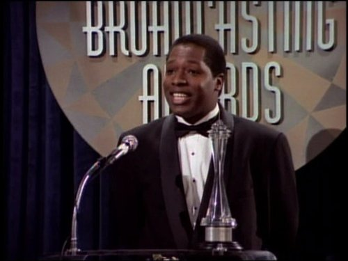

#6133 Beyond the Lights
Auszeichnungen: für 1 Oscars nominiert

 IMDB-Wertung: 6.9 / 10
IMDB-Wertung: 6.9 / 10  Tomatometer: 83
Tomatometer: 83  Metascore: 0
Metascore: 0 
Seit ihrer Kindheit wird Noni Jean auf eine Karriere als Sängerin vorbereitet. Ihre Mutter ermöglicht ihr viel, verlangt ihr aber auch alles ab. Und tatsächlich gelingt Noni schließlich der große Durchbruch, der sogar mit einem Grammy gekrönt wird. Doch dieses neue Leben im Rampenlicht setzt ihr schnell schwer zu, muss sie doch jemanden verkörpern, der sie selbst eigentlich gar nicht ist. Voller Verzweiflung versucht sie sich daher eines Abends sogar vom Balkon zu stürzen, wird aber in letzter Sekunde von dem jungen Polizisten Kaz gerettet. Er weiß aus eigener Erfahrung, wie es ist, zu etwas gertrieben zu werden, hinter dem man selbst nicht steht. Sein Vater drängt ihn, neben seiner Karriere als Gesetzeshüter, auch in die Politik einzusteigen. Entsprechend schwer haben es die beiden, als sie sich mehr und mehr ineinander verlieben und das erste Mal das tun, was sie selber wollen.
Jahr: 2014
Dauer: 111 Minuten
FSK: 12
Land: USA Studio: Relativity MediaTonspuren: DD5.1 - ,
Untertitel:
Auflösung: 720p (1280x720) Größe: 5048 MB
Genre: Drama, Musik, Liebe
Regisseur: Gina Prince-Bythewood
Drehbuch: Ari Folman
Soundtrack:
Darsteller:
 Gugu Mbatha-Raw als Noni
Gugu Mbatha-Raw als Noni Nate Parker als Kaz
Nate Parker als Kaz Minnie Driver als Macy Jean
Minnie Driver als Macy Jean- Machine Gun Kelly als Kid Culprit
 Danny Glover als Captain Nicol
Danny Glover als Captain Nicol- Darryl Stephens als Quentin
- Elaine Tan als April
- Isaac Keys als Jonas
- Tyler Christopher als Liam King
 Benito Martinez als Jesse Soria
Benito Martinez als Jesse Soria Aisha Hinds als J Stanley
Aisha Hinds als J Stanley- India Jean-Jacques als Noni, age 10
- Deidrie Henry als Felicia
- Estelle als Herself
- Brandon Wilson als Male Fan
- Jordan Belfi als Steve Sams
- Greg Davis Jr. als Officer Aforo
- Sky Soleil als LAPD Cop #2
- Hayley Marie Norman als Shai
- Rob Locke als Emcee
- Laurieann Gibson als Choreographer Gibson
 Aml Ameen als Trey
Aml Ameen als Trey- Jesse Woodrow als Carl
- Onahoua Rodriguez als Donia
-  Wren T. Brown als Pastor Marks
- Wade Allain-Marcus als Photographer
- Rocsi Diaz als Herself
- Ithamar Enriquez als Spanish Karaoke Guy
- Erika Ringor als Town Car Driver
- Gil Darnell als Worthy Farm Stage Manager
 Tom Wright als Reverend Brown
Tom Wright als Reverend Brown- Tina D'Marco als Vendor
- Debra Lee als Herself
- Roland Martin als Himself
- Chaka Khan als Herself
- Amar'e Stoudemire als Amar'e Stoudemire
- Gayle King als Herself
 Ashley Hamilton als Himself
Ashley Hamilton als Himself- Brandee Evans als Dancer
- Christina Webber als Dancer
- Maame-Yaa Aforo als Trey's Assistant , uncredited
- Cherrelle E'Lan als Nurse , uncredited
- Catherine Fisher als Tap Dancer , uncredited
- Grace Flagg als Erica Johnson , uncredited
- Katina Forte als Reporter , uncredited
- Haley Lyn Gilchrist als Tammy Toulson- tap dancer , uncredited
- Nikki Harlow als Bottle Service Waitress , uncredited
- Chase Mullins als Band Member , uncredited
- Shannon Murray als Kid Culprit's Girlfriend in Music Video , uncredited
- Myles Perez als Son of battered mom , uncredited
Datei: X:\2014(A-F)\Beyond the Lights (2014, FSK12, 1280x720).mkv seit 05.05.2017
Festplatte: HD 2013(I-Z)-2014(A-Z)
 Es gibt insgesamt 119 Filme in der Gruppe '2014(A-F)'
Es gibt insgesamt 119 Filme in der Gruppe '2014(A-F)'